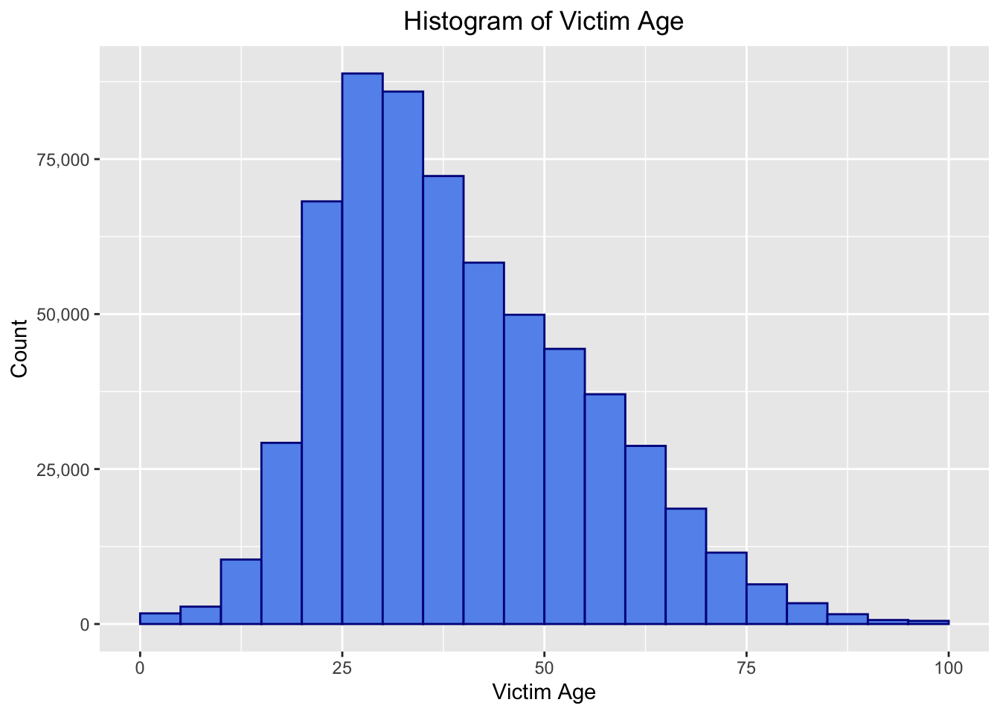
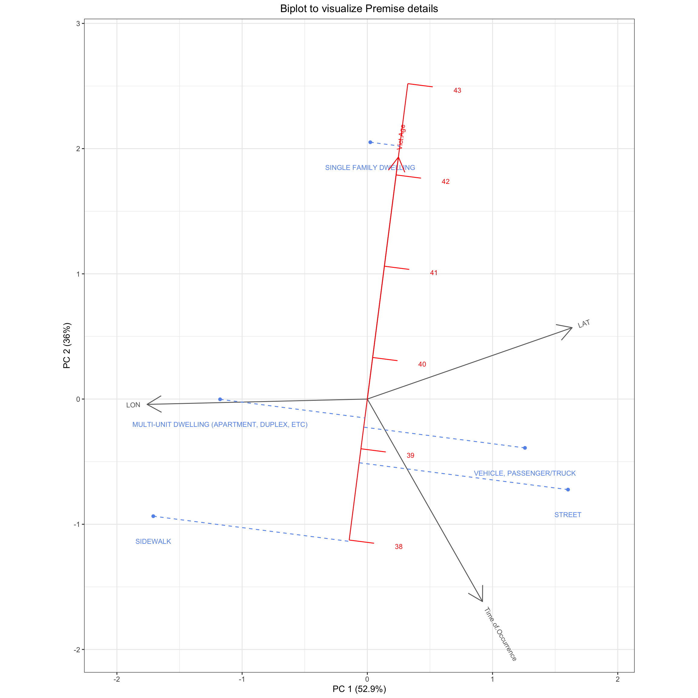
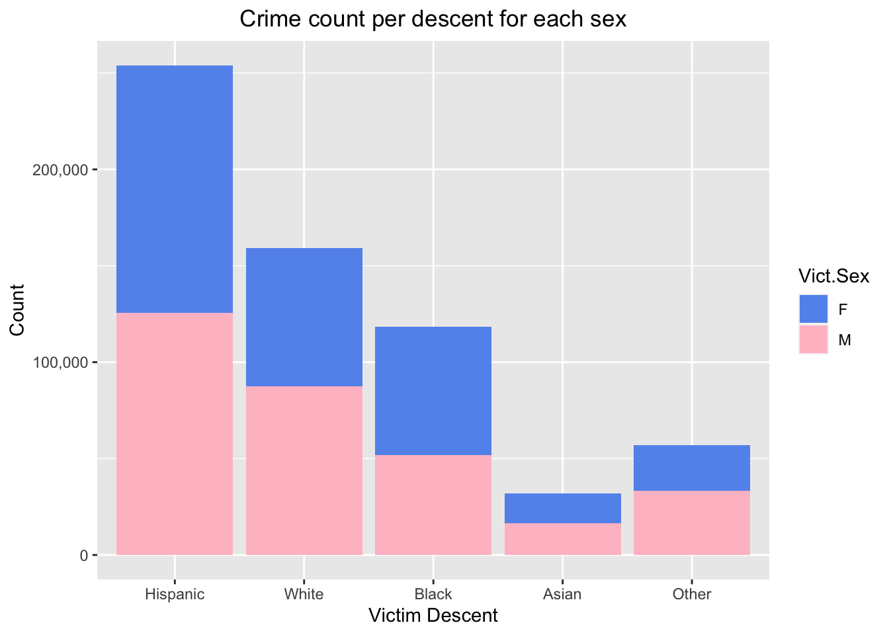
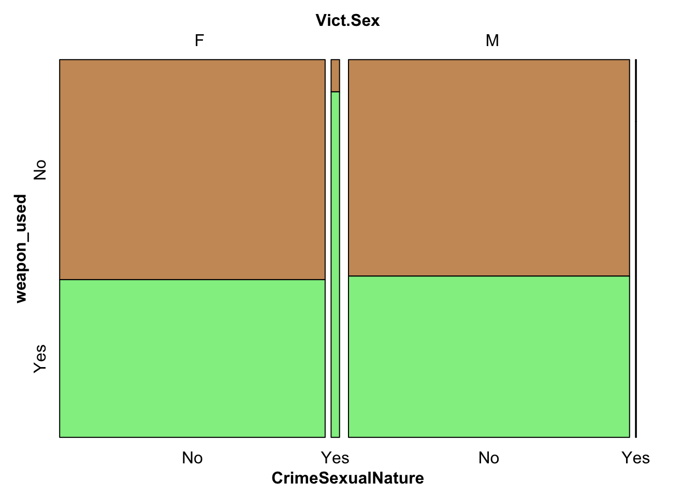
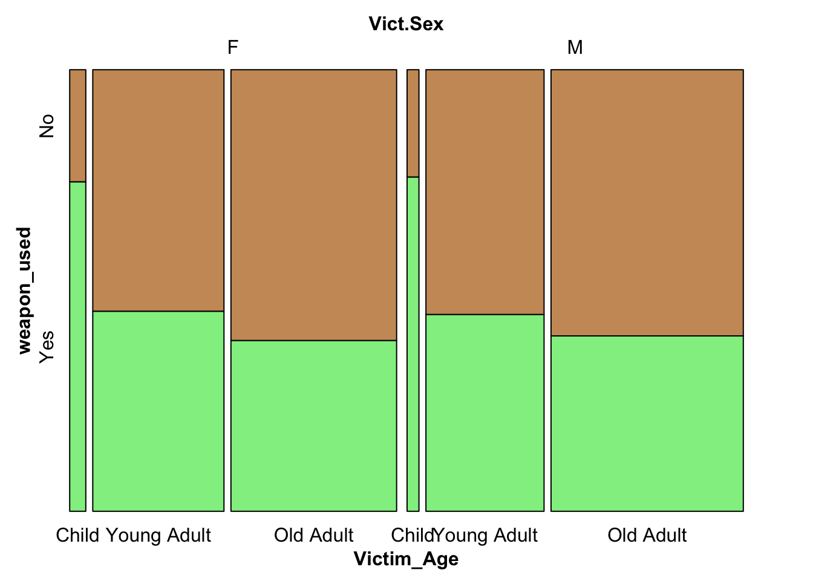
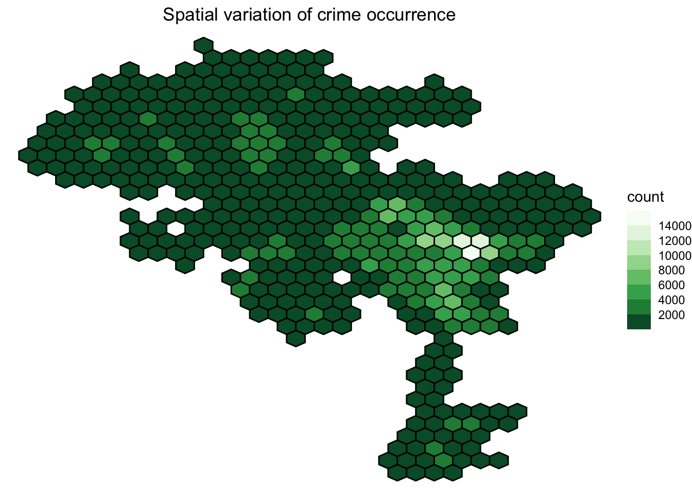
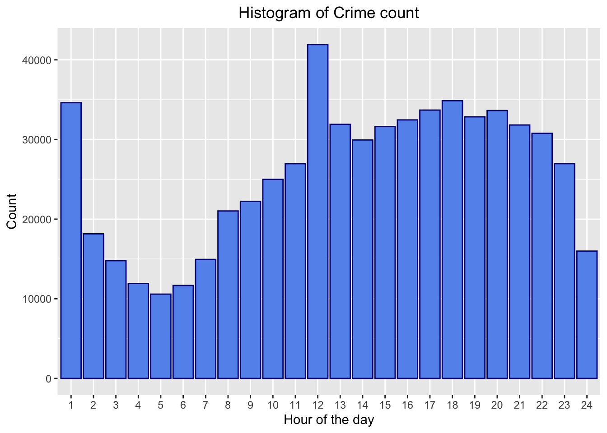
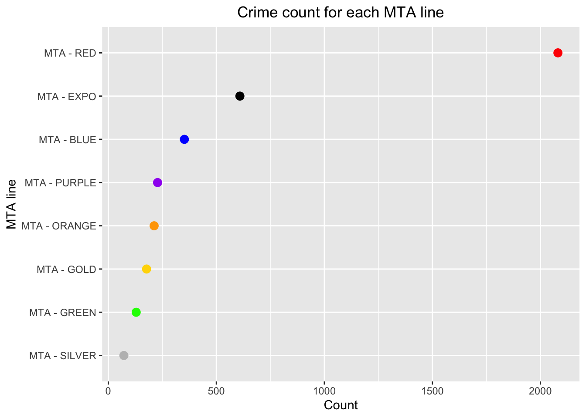

The age of the victim could prove to be useful to understand the psychology of criminals and the high-risk situations that lead to crime against certain individuals. Given in our dataframe is the age as an integer from 0 to 100, and to visualize the distribution of crime occurrence for different age groups, we will plot a histogram, with age bin width of 5 years.
── Attaching core tidyverse packages ──────────────────────── tidyverse 2.0.0 ──
✔ dplyr 1.1.4 ✔ readr 2.1.4
✔ forcats 1.0.0 ✔ stringr 1.5.0
✔ ggplot2 3.4.3 ✔ tibble 3.2.1
✔ lubridate 1.9.2 ✔ tidyr 1.3.0
✔ purrr 1.0.2
── Conflicts ────────────────────────────────────────── tidyverse_conflicts() ──
✖ dplyr::filter() masks stats::filter()
✖ dplyr::lag() masks stats::lag()
ℹ Use the conflicted package (<http://conflicted.r-lib.org/>) to force all conflicts to become errors
Code
ggplot(df_plot, aes(x=Vict.Age)) +geom_histogram(binwidth=5, color="darkblue", fill="cornflowerblue", breaks=c(0,5,10,15,20, 25, 30, 35, 40, 45, 50, 55, 60, 65, 70, 75, 80, 85, 90, 95, 100))+labs(title="Histogram of Victim Age",x="Victim Age", y ="Count")+theme(plot.title =element_text(hjust=0.5))+scale_y_continuous(labels = scales::comma) #so that the y axis has readable y ticks

From the above plot, we can observe that the maximum number of crimes occur against people in the 25-30 age group, and the least committed against very young children below 10.and elder people over the age of 80. In general, young adults are more susceptible to crime as expected, since they are by themselves most of the time in public spaces or in dangerous situations due to the circumstances of work, etc. The twenties seem to be the target age group for most crimes in LA.
3.2 Stay off the Premises!
On observation, there are 304 Unique premises where crimes take place in our dataframe such as malls, parking lots, MTA railway lines, etc. We will first limit ourselves to the top 6 most frequent premises, and observe whether they form clusters etc through a Biplot visualization where the continuous features of Victim age, Time of Occurrence, Latitude and Longitude are the axes and the graph is drawn on the decomposed version using PCA.
Code
df_premise=df_plot[df_plot$Premis.Desc %in%c('SINGLE FAMILY DWELLING', 'STREET', 'MULTI-UNIT DWELLING (APARTMENT, DUPLEX, ETC)','SIDEWALK','VEHICLE, PASSENGER/TRUCK'), ] #filtering only the top 6 premisesdf_premise$Time.of.Occurrence <-as.numeric(substr(df_premise$Time.of.Occurrence, 1, 2)) *100+as.numeric(substr(df_premise$Time.of.Occurrence, 4, 5)) #so that we can work with a continuous variable, since right now it is categoricallibrary(redav)df_premise<-df_premise %>%group_by(Premis.Desc) %>%summarise(Time.of.Occurrence =mean(Time.of.Occurrence), Vict.Age =mean(Vict.Age),LAT=mean(LAT), LON=mean(LON)) #for ease of biplot plotting, we compute the mean of each feature
Code
df_premise<-subset(df_premise, select=c('Time.of.Occurrence','Vict.Age','Premis.Desc','LON','LAT'))draw_biplot(df_premise, arrows=TRUE,"Vict.Age" ) +#the age axis is calibratedtheme_bw()+labs(title="Biplot to visualize Premise details")+theme(plot.title =element_text(hjust=0.5))

From the above Biplot, we are able to visualize how different premises compare to each other on the basis of the four continuous features: LAT (Latitude), LON (Longitude), Time of Occurrence, and Victim Age. On observation, we can see that the elder people (42 years old) are more at risk to crime in single family dwellings whereas the sidewalk is most risky for comparatively younger people. As for the time of occurrence, since the arrow points in the southeast direction, the street projection lies at the latest time, and is hence most dangerous to walk at night (eg. robbery, chain snatching at night is easier), with dwellings being safer in that regard.
3.3 Society and Crime
A major goal of our project is aiming to understand the relation between victim sex, victim descent, and the likelihood that given these two features of a person, that crime occurs against them. For this, we will plot a stacked bar chart to see both at the same time, and the proportions that each descent has with respect to sex in our dataset.
Code
df_sand<-df_plotdf_sand<-df_sand %>%group_by(Vict.Descent, Vict.Sex) %>%summarise(count=n(),.groups ='drop') #groupby descent and sex, and count the total in each combodf_sand$Vict.Descent=factor(df_sand$Vict.Descent, levels=c('H','W','B','A','O')) #reordering the factor levels in decreasing order of freqggplot(df_sand, aes(fill=Vict.Sex, y=count, x=Vict.Descent)) +geom_bar(position="stack", stat="identity")+labs(title="Crime count per descent for each sex",x="Victim Descent", y ="Count")+theme(plot.title =element_text(hjust=0.5))+scale_y_continuous(labels = scales::comma)+scale_fill_manual(values=c('cornflowerblue', 'pink'))+scale_x_discrete(labels=c('Hispanic', 'White', 'Black', 'Asian','Other')) #labeling with meaningful names

Observing the above stacked bar chart, firstly we notice that most crimes occur against victims of Hispanic descent, and the least against Asians. The ‘Other’ category consists of all the other descents that we grouped during the cleaning stage of our dataset. The proportion of female and males per descent appears to be mostly equal, however there are more crimes that occur against Black females than males, and less to white females than males.
3.4 Weapon Usage and Crimes of Sexual Nature
[Trigger warning: This portion focuses on crimes involving sexual abuse and rape]
Observing the column of Weapon.Used.Desc, we notice that there are either entries present or they are left blank (which we take to be no weapon used since there is a entry for ‘Unknown’ weapons present in the column already). Hence, we would like to study how the usage of a weapon in the crime depends on the nature of the crime, with us focusing on crimes of sexual nature (that includes rape, sexual abuse, etc). We first filter out such crimes, and then plot the following mosaic plot to understand the association that victim sex, whether it is a crime of sexual nature or not, and the weapon used classification have between them, if any.
Code
df_weapon<-df_plotdf_weapon$weapon_used <-ifelse(df_weapon$Weapon.Used.Cd >0, "Yes", "No") #making a new column based on the original onedf_weapon<-subset(df_weapon, Crm.Cd.Desc !="INCEST (SEXUAL ACTS BETWEEN BLOOD RELATIVES)"&Crm.Cd.Desc !="BEASTIALITY, CRIME AGAINST NATURE SEXUAL ASSLT WITH ANIM") #rare instances, we do not consider these entriesdf_weapon$CrimeSexualNature <-ifelse(grepl("sex|rape", df_weapon$Crm.Cd.Desc, ignore.case =TRUE), "Yes", "No")library(grid)icecreamcolors <-c("#cc9966", "lightgreen")vcd::mosaic(weapon_used~ Vict.Sex+ CrimeSexualNature, df_weapon,direction =c("v","v" ,"h"),highlighting_fill = icecreamcolors)

From the above mosaic plot, we observe that when the crime is of a sexual nature, there are more crimes occurring against females than males, and for the ones against females, majority of them occur with a weapon being used against the victim. Otherwise, the proportion of crimes that use and do not use weapons are equally distributed amongst male and female for crimes of not sexual nature.
3.5 Weapon Usage and Age category of Victim
To understand the association of weapon usage with victim age groups and victim sex, we plot a mosaic plot. The ages have been divided into three categories: ‘Child’ comprising of individuals of age less than or equal to 18 years, ‘Young Adult’ comprising of individuals of age 19 to 34 years, and ‘Old Adult’ comprising of ages 35 plus years.
Code
df_weapon$Victim_Age <-case_when( df_weapon$Vict.Age <=18~'Child', between(df_weapon$Vict.Age, 19, 34) ~'Young Adult', df_weapon$Vict.Age >=35~'Old Adult') #classifying ages into three categoriesdf_weapon <- df_weapon %>%filter(Victim_Age=='Child'| Victim_Age=='Young Adult'|Victim_Age=='Old Adult') df_weapon$Victim_Age=factor(df_weapon$Victim_Age, levels=c('Child','Young Adult','Old Adult'))icecreamcolors2 <-c ("#cc9966", "lightgreen")vcd::mosaic(weapon_used~ Vict.Sex+Victim_Age , df_weapon,direction =c("v","v","h"),highlighting_fill = icecreamcolors2) #mosaic plot, wre the weapon used is the dependent variable

From the above mosaic plot, we observe that crimes against children are where weapons are most used, leading to the consideration that it may be because children usually are defenseless victims and are unaware of their surroundings. For adults, both young and old, crimes occur without a weapon majorly. There are also more female child victims than male, but more male old adult victims than female.
3.6 Crime Coordinate System
To study the spatial variation of crime occurrences and try to understand which areas in Los Angeles are most susceptible to crime, we firstly proceed by removing the rows that have 0 as LON or LAT, since that was a preprocessing done by the dataset providers when the longitude and latitude was not identified. After this, we move on to bin the crime instances into 30 hex bins, and observe the spatial distribution of crimes in the form of a heat map.
Code
df_area <- df_plot %>%filter(LON !=0| LAT !=0) #excluding these entriesggplot() +geom_hex(data=df_area, #hexmapmapping =aes(x=LON, y=LAT), bins=30, color="black")+scale_fill_fermenter(n.breaks=10,palette ="viridis")+theme_void()+labs(title="Spatial variation of crime occurrence")+theme(plot.title =element_text(hjust=0.5))
Warning: Unknown palette: "viridis"

From the above map, we observe that eastern and slightly central LA have higher cases of crime occurring than the left and south parts of LA. Comparing this heatmap to an actual land map (See here for land map ), in particular the areas of South and Downtown LA are high-crime areas, with more than 10,000 cases occurring in that bin over three years.
3.7 Reporting Crime and its Consequences
To investigate this aspect of crime involving fear or shame of a victim in reporting crime, we will plot an Alluvial diagram that represents the flow of crime instances across Victim Sex, the difference in date reported and date occurred of the crime, and the status of the crime that was reported (whether the investigation is still continuing or the adult has been arrested). Due to less cases in juvenile perpetrators and unknowns and the ambiguity of ‘Adult Other’ category, we will focus only on the two categories of status of crime. The difference in dates reported have been classified into three options: Instant (where the crime is instantly reported on the same exact day as committed), 1 year (when the difference is less than 365 days), and 2 years (when the difference is less than 730 days but more than a year).
Code
df_diff<-df_plotdf_diff$difference<-as.Date(df_diff$Date_Reported)-as.Date(df_diff$Date_Occurred) #to get the difference in number of daysdf_diff$difference <-as.numeric(df_diff$difference)#categorizing the differencesdf_diff$difference[df_diff$difference==0 ]<-'Instant'df_diff$difference[df_diff$difference>0& df_diff$difference<=365]<-'Within 1 year'df_diff$difference[df_diff$difference>=366& df_diff$difference<=730]<-'Within 2 years'df_diff <- df_diff %>%filter(difference=='Instant'| difference=='Within 1 year'|difference=='Within 2 years') df_diff <- df_diff %>%filter(Status.Desc=='Adult Arrest'|Status.Desc=='Invest Cont') df_diff<-df_diff %>%group_by(Vict.Sex,Status.Desc,difference) %>%summarise(count=n(),.groups ='drop')
#the alluvial plot wil have the axis as the categorical vars
From the above alluvial diagram, on observing the flow from victim sex all the way to the end which is the status of the crime, we notice that firstly most of the adult arrests status crimes have resulted when the crime was reported instantly and very few result from those that have been reported 1-2 years after the crime (giving us some idea on the importance of immediate evidence needed in most cases). Mostly all cases reported after a year have their investigation still continuing. Secondly, out of all the Female victims, less than half report instantly, and the rest take more time than that, whereas it is the opposite for male victims where more than half report instantly.
3.8 Masks: Covid-19 or Burglar Disguise?
Taking advantage of the fact that we have a dataset that comprises of crime across years 2020 to present (2023), we will attempt to understand the affect the pandemic had on crime in LA. To do so, we plot a faceted time series plot across each year from 2020 to 2023 (which ends in November since we downloaded the dataset in November), and observe the crime count for each month extracted from the Date of occurrence column.
Code
df_covid<-df_plotdf_covid$Year_Occurred<-lubridate::year(df_covid$Date_Occurred) #use lubridate to extract the year from the date classdf_covid$Month_Occurred<-lubridate::month(df_covid$Date_Occurred)#use lubridate to extract the month from the date classdf_covid<-df_covid %>%group_by(Year_Occurred,Month_Occurred) %>%#groupby the year and month so that the line plot is at same points on monthssummarise(total_per_month=n(),.groups ='drop')
Code
ggplot(df_covid, aes(Month_Occurred, total_per_month)) +geom_line(color ='blue', breaks=c(1,2,3,4,5,6,7,8,9,10,11,12)) +geom_point(size =1) +facet_wrap(.~Year_Occurred,ncol=1)+labs(title="Yearly trend in crime",x="Month", y ="Total Count")+theme(plot.title =element_text(hjust=0.5))+scale_x_discrete(name ="Month", limits=c('Jan','Feb','Mar','Apr','May','Jun','Jul','Aug','Sep','Oct','Nov','Dec'))
We observe that for the first part of 2020, there is crime count of more than 10,000 and a slight decrease, but from March onwards there is no significant change in the trend which may be because the pandemic was a very uncertain time at the beginning when nobody left their houses. Such situations would mean that there would be less robberies and crime occurring because of lack of people to attack in public spaces. In 2021, the trend is continued at the beginning, but then rises significantly and is at an all time high in 2022 where we faced the second wave of the pandemic. This period of time was chaotic and people were desperate for resources and food given the shortages in many parts of the US. This may be a reason for this rise, where cases are above 14,000 for the majority of 2022. Then, in 2023, there are less cases that occurred, however since we are in the current year, it may be that people have not reported the crimes yet and hence there are less entries in the 2023 year.
3.9 Nocturnal Nature of Crime
Curious to verify whether most crime instances occur when it is dark outside and at nightfall when the security is at low task force, we plot a histogram of the time of occurrence of crime, binning the time into hours. Hour 1 corresponds to 12:00 am midnight to 1:00 am, and Hour 24 corresponds to 11:00pm to 12:00 am.
Warning in geom_histogram(stat = "count", color = "darkblue", fill =
"cornflowerblue"): Ignoring unknown parameters: `binwidth`, `bins`, and `pad`

As expected, there is a dip in the crime committed during the early hours of the morning (from 3 AM to 7 AM), after which crime instances continuously rise and stay at that range till 10 PM. The hour before midnight sees a dip in crime, but then after midnight, the crime peaks to around 35,000 total counts (which is the second highest amount throughout the day). An anomaly we notice is clearly the huge peak in time of occurrence of crime at noon, which we also suspect could be because of lack of reporting time in some crime cases, for which the police department may enter 12:00 as the dummy time, and hence it falls in this bin.
3.10 MTA (Most Terrifying Automobile) lines?
Code
df_mta<-df_plotdf_mta <- df_mta %>%filter(sapply(strsplit(as.character(df_mta$Premis.Desc), " "), function(x) x[1] =='MTA'))df_mta <- df_mta %>%filter(Premis.Desc!='MTA BUS'& Premis.Desc!='MTA PROPERTY OR PARKING LOT') #filtering out the MTA line premisesgetFirstFewWords <-function(text, n =3) { #to extract the line color from the premis words <-strsplit(text, " ")[[1]]paste(words[1:n], collapse =" ")}# Apply the function to create a new columndf_mta <- df_mta %>%mutate(railline =sapply(Premis.Desc, getFirstFewWords)) #grouping all colors togetherdf_mta<-df_mta %>%group_by(railline) %>%summarise(count=n(),.groups ='drop')
On observation of the unique values of crimes occurring on the MTA lines, there are the following color lines: Orange, Purple, Green, Blue, Red, Silver, Expo, Gold and the Bus and Parking Lot. We remove those that occur in the Bus and Parking Lot, since we want to concentrate on the railway line. Also, the MTA bus has the highest cases of crime occurring, and appears to be an outlier when we plot the Cleveland Dot plot, so for better visualization, we focus on the railways.
Code
custom_colors <-c("MTA - RED"="red", "MTA - BLUE"="blue", "MTA - GREEN"="green", "MTA - GOLD"="gold","MTA - SILVER"="grey", "MTA - PURPLE"="purple", "MTA - ORANGE"="orange", "MTA - EXPO"="black") #color coding the linesggplot(df_mta, aes(x = count, y =fct_reorder(railline, count))) +geom_point(size =3, color = custom_colors[df_mta$railline]) +scale_color_manual(values = custom_colors) +labs(title="Crime count for each MTA line",x="Count", y ="MTA line")+theme(plot.title =element_text(hjust=0.5), legend.position ="none" )

From the above Cleveland dot plot, we can infer that the Red line is the most dangerous in terms of number of crimes occurring throughout the dataset. This maybe because it is the most frequently used, or is not properly monitored with inefficient security resources. The line of least crime occurrences is the silver one. The red line has over 2000 crimes that occurred on it in the past three years, whereas the others have less than 1000 crimes at their locations, pointing out a great difference in the MTA lines.